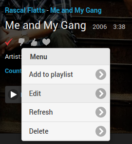
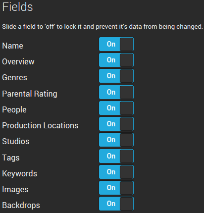
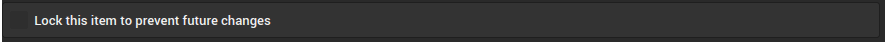
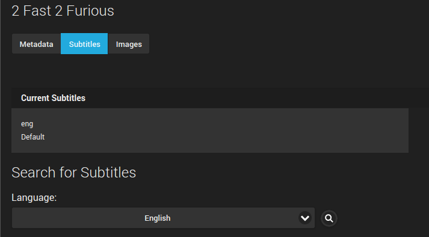
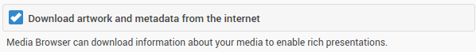

Metadaten-Manager
Einer der Bereiche, in denen MediaBrowser als Medienserver glänzt, ist das Metadaten-Management. Der Server verfügt über einen Metadaten-Manager, der es Ihnen ermöglicht, alle Metadaten für jedes Element in Ihrer Bibliothek an einem Ort einzusehen.
Der Metadaten-Manager kann über das ausziehbare Menü im Web-Client in der oberen linken Ecke des Bildschirms aufgerufen werden.

Eine weitere Möglichkeit, auf den Metadaten-Manager zuzugreifen, ist über Optionen->Bearbeiten des Elements, das Sie bearbeiten möchten. Diese Methode führt Sie direkt zum Element im Editor.

Verwendung des Metadaten-Managers
Metadaten aktualisieren
Jedes Medienelement hat die Option, sich selbst Aktualisieren. Die Auswahl von Aktualisieren wird frische Metadaten aus jeder der Datenbanken abrufen, von denen der Server konfiguriert ist, sie abzurufen. Zusätzlich werden alle fehlenden Bilder heruntergeladen (Logos, Disc-Bilder, Poster usw.).
Wenn Sie die Schaltfläche Erweiterte Aktualisierung auswählen, erhalten Sie ein Popup mit mehreren Optionen, was aktualisiert werden soll.
Die Optionen für den Modus zur Metadatenaktualisierung wirken sich nur auf die Text-Metadaten aus.
- Das Aktualisieren aller Daten (Standardoption) überschreibt alle Felder mit Metadaten aus externen Datenbanken.
- Das Aktualisieren nur fehlender Daten bewahrt alle vorhandenen Metadaten und füllt nur die Felder aus, denen Metadaten fehlen.
- Eine lokale Aktualisierung veranlasst den Server, die NFO- oder XML-Datei, die die Metadaten enthält, erneut zu lesen.
- Die Auswahl von Keine wird keine der Metadaten aktualisieren.
Die Optionen für den Modus zur Bildaktualisierung wirken sich nur auf die vom Server verwendeten Bilder aus.
- Nur fehlende Bilder herunterladen (Standardoption) lädt nur Bilder herunter, die aus der vorhandenen Bildersammlung fehlen.
- Bilder herunterladen und ersetzen wird den Server zwingen, alle Bilder für das Medienelement erneut herunterzuladen.
- Die Auswahl von Keine verhindert, dass der Server irgendwelche der vorhandenen Bilder ändert oder weitere herunterlädt.
Elemente identifizieren
Alle Medien können ihre Informationen von Online-Datenbanken wie TheMovieDB und TheTVDB beziehen. Wenn ein Element vom Server falsch identifiziert wird, können Sie es manuell mit der Identifizieren-Schaltfläche identifizieren oder, wenn Sie die Datenbank-IDs für Ihr fälschlicherweise identifiziertes Element bereits kennen, einfach die richtigen IDs in die Datenbankfelder einfügen und das Element aktualisieren.
Datenbank-IDs
Datenbank-IDs sind extrem wichtig für den Server, um zu bestimmen, was jedes Medienelement ist und ob es angesehen wurde.
Ein Haken bei diesem Ansatz ist, dass Medienelemente mit denselben IDs (zum Beispiel ein Film, der sowohl in einer 3D- als auch in einer 2D-Version vorliegt) vom Server als genau dasselbe Element behandelt werden, unabhängig davon, dass zwei separate Dateien existieren. Dies kann bedeuten, dass es im Wiedergabe-Tab oder an anderen Stellen doppelt angezeigt wird. Außerdem, wenn Sie die 3D-Version ansehen, aber nicht die 2D-Version, wird der Server beide Formate als angesehen markieren.
Metadaten speichern
Vergessen Sie nicht, nach der Änderung VON JEDEM Metadatum auf Speichern zu klicken; andernfalls gehen all Ihre Änderungen verloren, wenn Sie die Seite verlassen. Wenn Sie möchten, dass die von Ihnen vorgenommenen Änderungen auch nach einer Aktualisierung des Elements bestehen bleiben, müssen Sie entweder das geänderte Metadatenfeld sperren oder das gesamte Element sperren.


Jugendschutz und Metadaten
Sie sollten sich bewusst sein, dass es bestimmte Metadatenfelder gibt, die sich auf die Verwendung von Jugendschutzeinstellungen auswirken.
Ein gutes Beispiel für ein solches Metadatenfeld ist die Altersfreigabe. Die Altersfreigabe kann verwendet werden, um festzulegen, ob ein Serverbenutzer auf Inhalte zugreifen kann, die über einer bestimmten Bewertung liegen, z.B. um einem Teenager den Zugang zu Inhalten mit PG-13 oder darunter zu erlauben, während der Zugang zu Inhalten mit R oder höher eingeschränkt wird.

Ein weiteres Metadaten-Element, das Sie verwenden können, um einem Benutzer den Zugriff auf bestimmte Inhalte zu verwehren, ist das Metadatenfeld Tags.

Um zu verhindern, dass ein Benutzerprofil auf bestimmte Inhalte zugreift
- Taggen Sie jedes Element, auf das Sie den Zugriff verhindern möchten, mit einem eindeutigen Tag.
- Gehen Sie im Server-Dashboard zu Benutzer->Jugendschutz.
- Fügen Sie das eindeutige Tag in das Feld Inhalte mit diesen Tags blockieren ein.
- Speichern Sie die Änderungen am Benutzerprofil und den Medientags.
Sie können auch das Gegenteil tun und nur den Zugriff auf Inhalte mit bestimmten Tags erlauben. Fügen Sie das Tag in das Feld Nur Elemente mit diesen Tags zulassen ein.
Um sicherzustellen, dass die Tags bei einer Bibliotheksaktualisierung nicht verschwinden, sperren Sie das Tags-Feld in den Metadaten des Elements.
Tip
Tags können auch für benutzerdefinierte Trailer zur Kino-Intro verwendet werden. Fügen Sie einfach jedem Film/Episode ein Tag wie „HomeMovies“ hinzu. Dann konfigurieren Sie einen Pfad in „Custom Intros“ für ein benutzerdefiniertes Codecs-Verzeichnis und fügen Sie einen Film mit einem (extern zugefügten) Tag „HomeMovies“ hinzu. Dies ermöglicht es Emby, Ihr benutzerdefiniertes Intro für jeden Film mit demselben Tag anzuzeigen.
Untertitel
Für Ihre Filme und TV-Shows ist der Metadaten-Manager der Ort, an dem Sie Untertitel verwalten können. Sie können sehen, welche Untertitel Sie haben, ob sie grafisch oder textbasiert sind und in welchen Sprachen die Untertitel verfügbar sind.

Um Zugang zur OpenSubtitles-Datenbank zu aktivieren, müssen Sie Ihre Kontoinformationen in Metadaten->Untertitel im Dashboard eingeben. Dieser Bereich ist auch der Ort, an dem Sie verwalten können, was bei der Ausführung der AufgabeFehlende Untertitel herunterladen in Erweitert->Geplante Aufgaben automatisch heruntergeladen wird.
Bilder
MediaBrowser kann automatisch Bilder herunterladen, um die Präsentation der Medien in jedem Client zu verbessern. Um das automatische Herunterladen von Bildern zu aktivieren, müssen Sie die Option Kunstwerke und Metadaten aus dem Internet herunterladen in Metadaten->Grundlagen im Dashboard aktiviert haben.

Bilder werden von Fanart.tv, TheMovieDB, The Open Movie Database und TheTVDB heruntergeladen. Der Bilder-Tab im Metadaten-Manager kann genutzt werden, um zu ändern, welche Bilder der Server für Ihre MediaBrowser-Clients präsentiert.
Um das verwendete Bild zu ändern, klicken Sie einfach auf die Wolke unter jedem Bild, und der Server wird alle Datenbanken nach neuen Bildern durchsuchen.

Bilder können mit unserer Bildbearbeitungsfunktion bearbeitet werden.